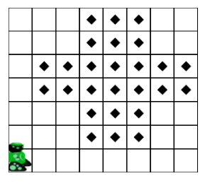
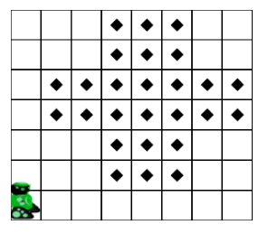
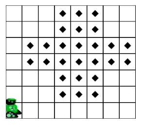
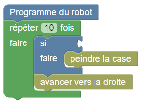
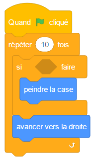
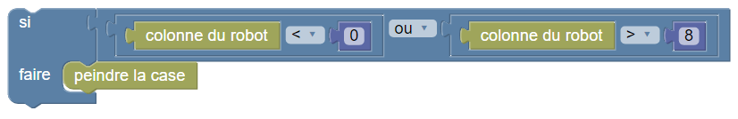
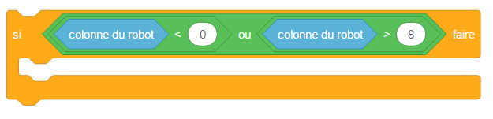

Dessiner un escalier


 

Programmez le robot pour qu'il peigne toutes les cases marquées.
L'objectif est d'écrire un programme constitué d'une seule boucle « répéter » et d'une condition, comme ceci :
 
from robot import *
for loop in range(10)
avancer()
if ...:
peindre()
En choisissant la bonne condition, utilisant la colonne du robot. Par exemple :
 Notez qu'il y a plusieurs tests sur cet exercice, et que votre programme doit fonctionner sur chacun d'eux.
L'objectif est d'écrire un programme qui passe sur chacune des cases de la grille, et utilise une condition pour décider s'il doit peindre cette case ou non. Cette condition peut utiliser la colonne et la ligne du robot.
Les cases en dessous de la diagonale sont celles dont la colonne est strictement inférieure à la ligne.
Votre programme doit utiliser une seule fois l'instruction peindre la case.